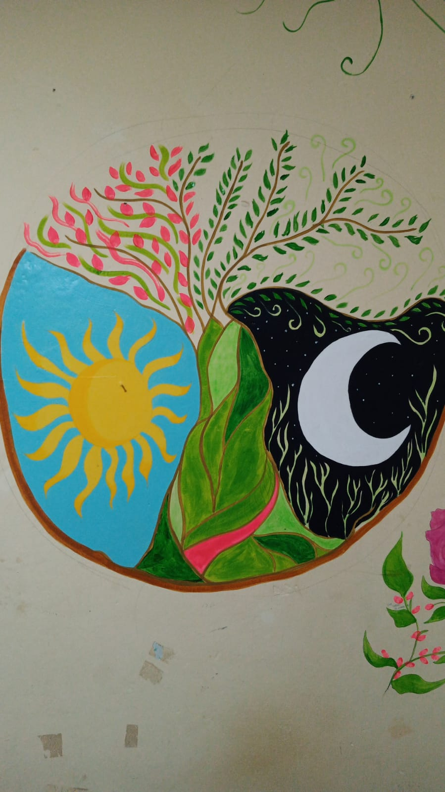
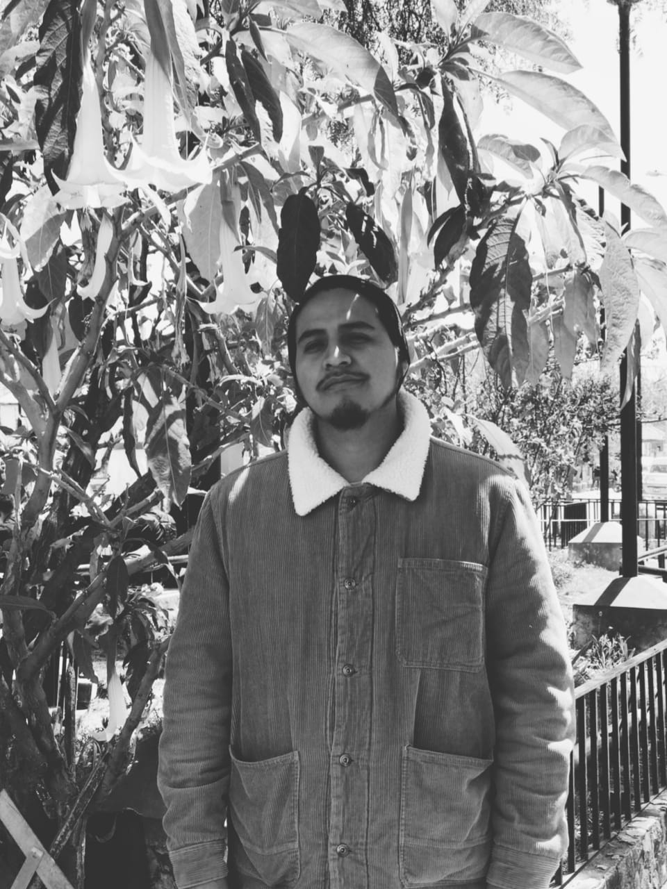
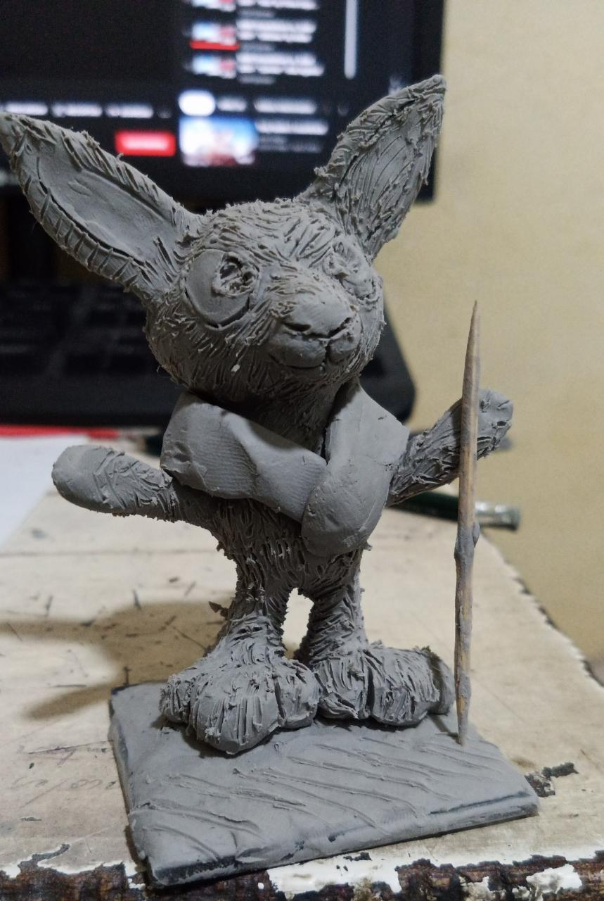
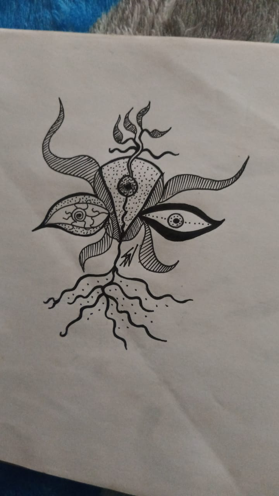

Italo Arrieta
Mi carrera es Dirección y Diseñador Grafico
Soy un joven emprendedor dinámico y creativo; puntual y responsable. La ilustración y el diseño son una parte importante de mi vida. Me gusta reflexionar sobre la vida siempre cuando salgo a la calle, porque se ve mucha realidad cruda en el camino.
Ilustración
Me gusta la ilustración desde siempre, prefiero dibujar a mano alzada me especializo en acuarelas, tinta china, acrilicos y a lapiz .
Diseñador
Considero que el diseño es muy importante para poder hacer realidad los productos, paginas, merchandising y redes para las personas.
Acrilicos
Pinturas en lienzos, sobre dibujos o diseños abstractos. Desarrollo varias pinturas para venderlas en ferias, suelo pintarlas con calma y dedicación en mi cuarto, los acrilicos los compro en la calle capóm y la mayoria de mis elementos a la hora de pintar.
Bicicleta
Me gusta montar Bicicleta sobre todo cuando son rutas largas y sitios con objetivo, uso la bicicleta desde pequeño, no me considero profesional pero si me dan una bicicleta profesional rutera, no tendria ningun problema en montarla.
Mascotas
Tengo 4 mascotas en mi casa donde vivo con mi familia, tengo 2 gatas una se llama rosita y vive en la azotea con mis primos, otra se llama colitas y vive conmigo tambien tengo 2 perritas se llaman connie y xuxi son muy divertidas y siempre las saco a pasear para que hagan sus necesidades.
Arte
Concepto
El arte es una parte fundamental en mis dias, reflejo todo lo que siento al momento de pintar y dibujar. Se transmite mediante las pinturas todo lo que uno puede sentir al reflejar el dibujo, nosotros como seres humanos tenemos que dejar huella en este mundo y nada mas hermoso que hacerlo mediante el arte.
lienzos
Cuando pinto en lienzo se me hace mas facil expresar los dibujos porque me gusta como fluye el pincel sobre el lienzo.
Acuarelas
Las acuarelas son una parte importante para reflejar los dibujos, con el agua esta combinación causa una magia en el papel.
Estilografos
Me gusta dibujar a lapiz y luego pasarle estilografos para definir las lineas creando contornos muy buenos.
Reflexión
Si quieres ser feliz una hora – toma una siesta. Si quieres ser feliz un día – ve a pescar Si quieres ser feliz un año – hereda una fortuna. Si quieres ser feliz toda la vida – ayuda a los demás..
Mural
Esta pintura es a base de acrilicos que expresa el sol, la luna con una conexión de vitalidad mediante un arbol lleno de armonia floreciendo en la parte superior.
Imagen de mi pared
Arbol de Vida
 Arte Plastíco & Modelado
 Arte creado por mi a base de plastilina en frio, quise proyectar un conejito con su poncho a una medida tamaño de mano.
 Dibujo a base de estilografos, he creado un dibujo experimental suelo dibujar en mi bitacora para tener muchas alternativas ala hora de pasarlo a illustrator.